Meu Editor de Arquivos — Manual del usuario
Versión 1.1.0
1. Bienvenida
Meu Editor de Arquivos es un editor ligero para quienes trabajan con textos, notas, scripts, archivos de configuración, registros y código. Funciona en Windows 11, Debian 12 y 13 y Ubuntu 22.04 o posterior, y no necesita conexión a internet para editar.
Lo que encontrarás en él:
- pestañas para varios archivos a la vez, con recuperación automática de lo que has escrito;
- Markdown que se abre con formato, con un botón para editar el texto;
- un visor de JSON en el que puedes abrir y cerrar partes del archivo;
- búsqueda y reemplazo en un archivo o en una carpeta entera;
- colores de sintaxis para decenas de lenguajes, fragmentos (snippets) y macros;
- una cuenta de usuario para guardar archivos en la nube y abrirlos en otros equipos;
- la interfaz en seis idiomas.
2. Conoce la pantalla
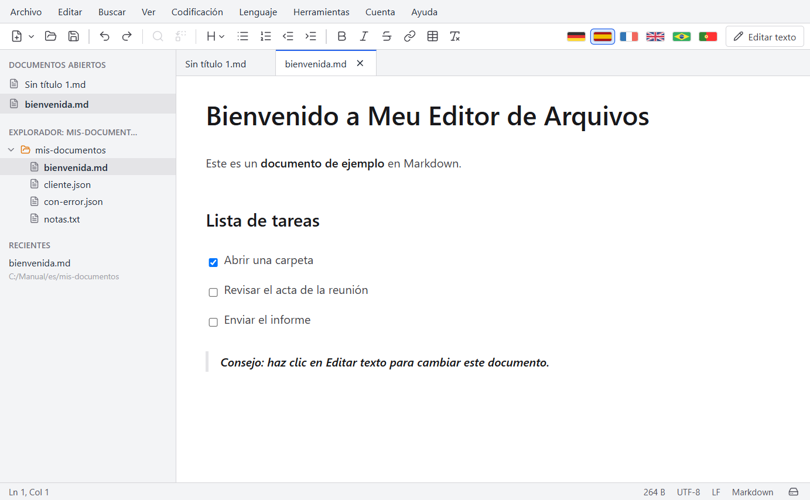
- Barra de menús (arriba): Archivo, Editar, Buscar, Ver, Codificación, Lenguaje, Herramientas, Cuenta y Ayuda.
- Barra de herramientas: accesos directos a los comandos más usados. Los botones de formato aparecen cuando el documento es Markdown. A la derecha están las banderas de los idiomas y el botón que alterna entre vista previa y edición.
- Barra lateral (a la izquierda): los documentos abiertos, el explorador de la carpeta abierta y los archivos recientes. Para ocultarla o mostrarla, usa Ctrl+Shift+B.
- Pestañas: cada documento tiene la suya. Un punto (●) junto al nombre indica que hay cambios que aún no se han escrito en el archivo.
- Área de edición: donde lees y escribes.
- Panel inferior: muestra los resultados de la búsqueda en archivos. Se abre solo cuando usas la búsqueda.
- Barra de estado (abajo): línea y columna del cursor, tamaño del archivo, codificación, tipo de fin de línea y lenguaje del documento.
3. Crear y abrir archivos
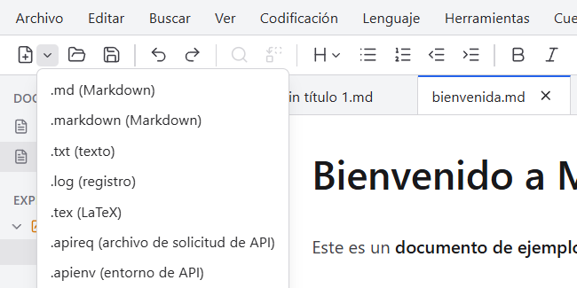
- Documento nuevo: haz clic en Nuevo o pulsa Ctrl+N. Un documento nuevo es Markdown (.md). Con la flecha junto al botón creas otro tipo: .md (Markdown), .txt (texto), .py (Python) o .sql (SQL).
- Abrir archivos: Archivo → Abrir o Ctrl+O. Puedes elegir varios archivos a la vez. El límite es de 50 MB por archivo.
- Abrir una carpeta: Archivo → Abrir carpeta o Ctrl+Shift+K. La carpeta aparece en el explorador de la barra lateral, y al hacer clic en un archivo se abre. Usa Cerrar carpeta para cerrarla.
- Archivos recientes: los últimos archivos que usaste están en la lista Recientes de la barra lateral. Haz clic en uno para abrirlo de nuevo.
Si otro programa modifica un archivo que tienes abierto, la aplicación lo vuelve a cargar sola. Si en ese documento tienes cambios tuyos sin guardar, te pregunta antes. Si el archivo se elimina o se mueve, el nombre de la pestaña se pone en rojo y tachado.
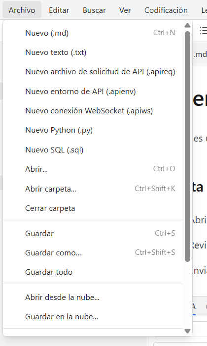
4. Guardar y documentos temporales
- Guardar (Ctrl+S) escribe el documento en su archivo. En un documento nuevo, la aplicación pide el nombre y la ubicación.
- Guardar como (Ctrl+Shift+S) escribe una copia con otro nombre o en otro lugar.
- Guardar todo escribe todos los documentos que tienen cambios.
No pierdes lo que escribiste. Unos segundos después de cada cambio, la aplicación guarda automáticamente todos los documentos abiertos, incluso los que nunca se guardaron. Esto ocurre te acuerdes de guardar o no.
Al cerrar la aplicación, no pregunta nada y no descarta nada. La próxima vez que la abras, las pestañas, la carpeta y el texto sin guardar vuelven como estaban. Guarda cuando quieras escribir en el archivo de verdad.
Al cerrar una pestaña con cambios, la aplicación pregunta si quieres guardar, no guardar o cancelar. Dos observaciones: el historial de deshacer (Ctrl+Z) no se conserva entre sesiones, y la recuperación automática guarda hasta 100 MB de texto sin guardar.
5. Editar texto
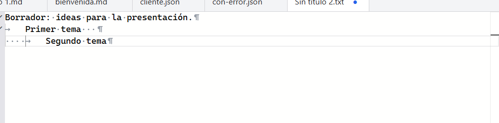
Los comandos de edición están en Editar y las opciones de visualización en Ver.
- Deshacer y rehacer: Ctrl+Z y Ctrl+Y.
- Buscar y reemplazar en el documento: Ctrl+F y Ctrl+H. Para ir a una línea, usa Ctrl+G.
- Varios cursores: mantén pulsada Alt y haz clic donde quieras otro cursor, o pulsa Ctrl+D para seleccionar la siguiente aparición de la palabra.
- Selección en columna: mantén pulsadas Mayús+Alt y arrastra el ratón para editar varias líneas en la misma columna.
- Líneas: Alt+↑ y Alt+↓ mueven la línea; Shift+Alt+↑ y Shift+Alt+↓ la duplican; Ctrl+/ la comenta o la descomenta.
- Ordenar y limpiar: Ordenar líneas (A-Z), Ordenar líneas (Z-A), Quitar líneas duplicadas y Quitar espacios al final de las líneas.
- Caracteres invisibles: muestra los espacios (·), las tabulaciones (→) y el final de cada línea (¶). Es muy útil para encontrar espacios de más.
- Ajuste de línea y Contraer todo / Expandir todo ayudan a leer archivos largos.
- Tamaño de la letra: Ctrl++ la agranda, Ctrl+- la reduce y Ctrl+0 vuelve al tamaño predeterminado.
- Sangría: en Editar, elige entre espacios o tabulación y el tamaño (2, 4 u 8 columnas).
- Pantalla completa (F11, en Ver): muestra solo el documento, ocupando toda la pantalla. Pulsa F11 de nuevo, o haz clic en el botón de la esquina superior derecha, para salir.
Tus preferencias de visualización se guardan para la próxima vez. Los textos propios del editor, como el cuadro de búsqueda (Ctrl+F) y la paleta de comandos (F1), aparecen en inglés.
Letras, espacios y finales de línea
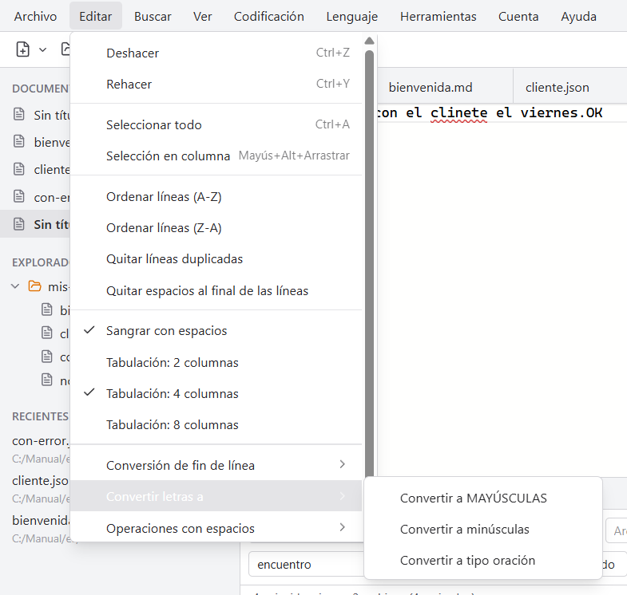
Al final del menú Editar hay tres submenús:
- Conversión de fin de línea: convierte los finales de línea del documento al formato Windows (CRLF), Unix (LF) o Mac (CR). La conversión marca el documento como modificado; basta con guardar para que surta efecto.
- Convertir letras a: con un texto seleccionado, elige Convertir a MAYÚSCULAS, Convertir a minúsculas o Convertir a tipo oración (solo la primera letra de cada oración queda en mayúscula).
- Operaciones con espacios: Quitar espacios a la derecha, Quitar espacios a la izquierda y Quitar espacios a la derecha y a la izquierda se aplican a la línea del cursor (o a las líneas seleccionadas). Quitar espacios dobles del documento reemplaza dos o más espacios seguidos por uno solo en todo el documento, sin tocar la sangría del comienzo de las líneas.
MD5, SHA-1, SHA-256 y SHA-512
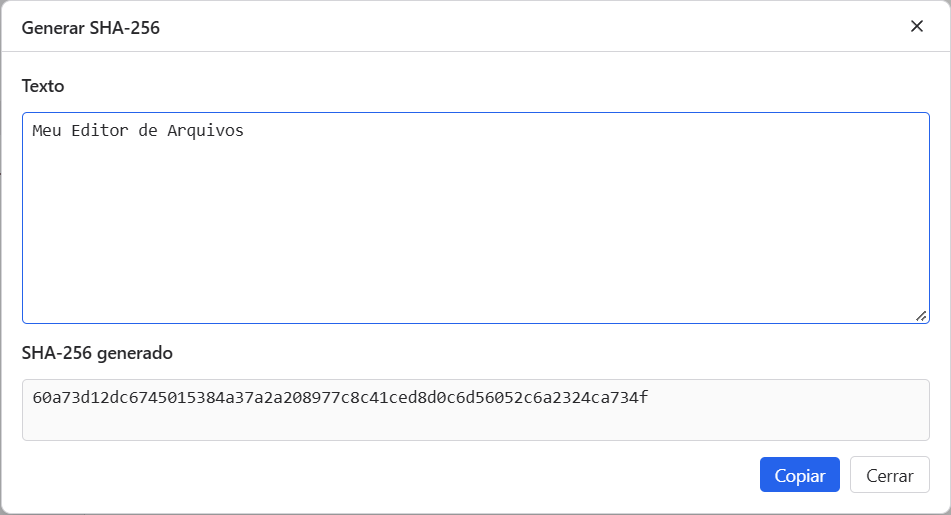
Al final del menú Herramientas, cada algoritmo tiene dos opciones:
- Generar: abre una ventana; escribe o pega el texto y el resultado aparece al instante, justo debajo. Copiar lleva el resultado al portapapeles.
- Generar a partir del texto seleccionado: calcula el resultado a partir del texto seleccionado en el documento y lo deja en el portapapeles, listo para pegar. Aparece un aviso en la barra de estado.
Corrector ortográfico
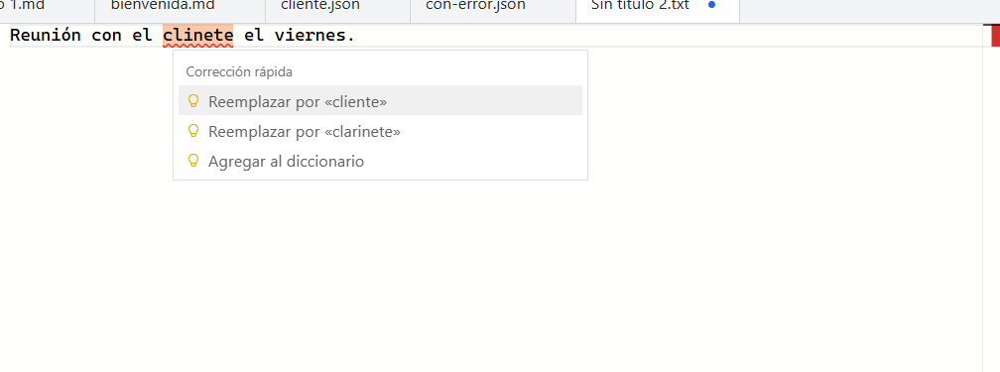
En los documentos Markdown, de texto (.txt) y LaTeX, las palabras que no están en el diccionario aparecen subrayadas en rojo. El código, los enlaces, las direcciones, las siglas y el texto entre comillas invertidas no se revisan, y los archivos de registro y CSV quedan fuera.
- Coloque el cursor en la palabra y pulse Ctrl+. (o haga clic derecho y elija Sugerencias ortográficas) para ver las sugerencias. Elija una para reemplazar la palabra.
- Agregar al diccionario hace que la palabra se acepte a partir de entonces, en cualquier idioma.
- Herramientas → Revisar ortografía (o F7) activa y desactiva la revisión.
- El corrector usa el idioma de la interfaz. Para revisar en otro idioma, elija en Herramientas → Ortografía utilizada una de las opciones Ortografía: Deutsch, Ortografía: English…: hay diccionarios de alemán, español, francés, inglés, portugués de Brasil y portugués de Portugal. Ortografía: idioma de la interfaz vuelve a seguir la interfaz.
Los diccionarios vienen con la aplicación: el corrector funciona sin internet.
6. Markdown
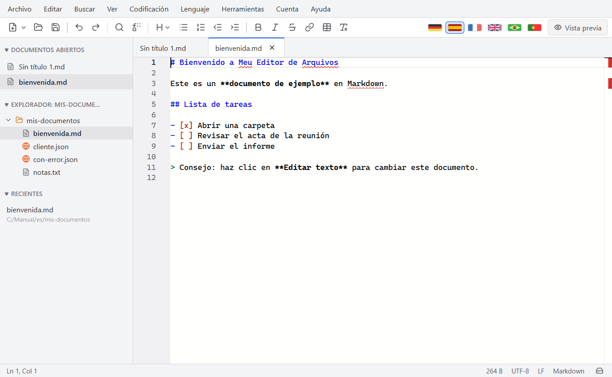
Los archivos Markdown (.md) se abren formateados y puede seguir escribiendo directamente en el texto formateado. La barra de herramientas aplica el formato en el cursor o en la selección: títulos, lista con viñetas, lista numerada, sangría, negrita (Ctrl+B), cursiva (Ctrl+I), tachado (Ctrl+Shift+X), enlace, tabla y quitar formato. Ctrl+Z y Ctrl+Y deshacen y rehacen.
Para ver y editar el código Markdown, haga clic en Editar texto (o pulse Ctrl+Shift+E); para volver al texto formateado, haga clic en Vista previa. La barra de formato funciona en los dos modos.
Al editar el texto formateado, el Markdown se reescribe en un estilo estándar (por ejemplo, listas con -). Los documentos que contienen HTML quedan de solo lectura en este modo para no perder el HTML: edítelos con Editar texto. Para abrir un enlace en el navegador, use Ctrl+clic. Las imágenes aparecen como una etiqueta con su nombre, y su dirección se conserva en el archivo.
7. Archivos JSON
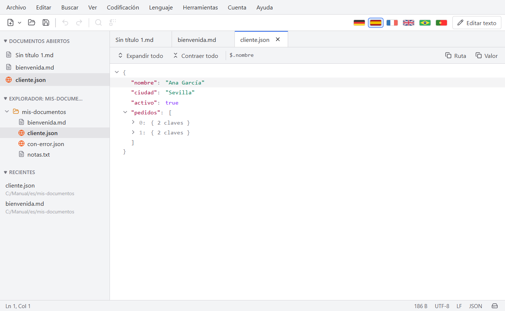
Los archivos .json se abren en árbol. Haz clic en la flecha de un elemento para abrir o cerrar esa parte. Usa Expandir todo y Contraer todo para abrir o cerrar todo. Al hacer clic en un elemento, la barra muestra su ruta y puedes copiar la Ruta o el Valor. Las listas muy grandes se muestran poco a poco, con un botón para ver más.
Para editar, haz clic en Editar texto. En modo de edición, el botón Formatear JSON (Shift+Alt+F) ordena el archivo.
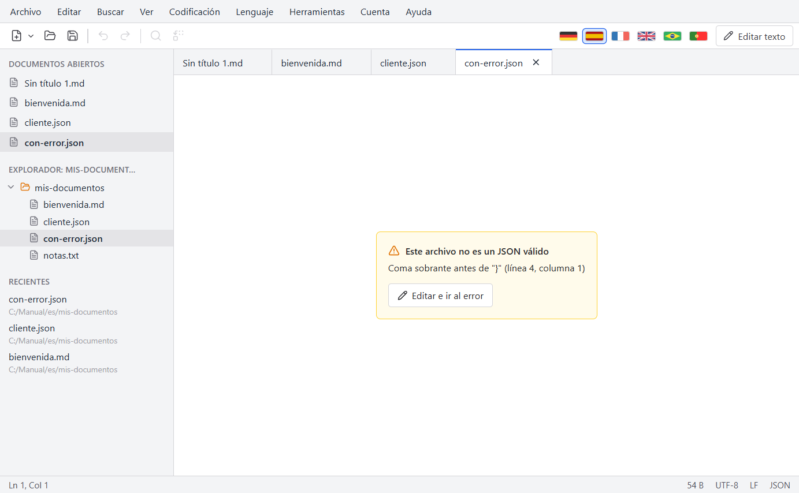
Si el archivo tiene un error, la aplicación explica el problema e indica la línea y la columna. El botón Editar e ir al error abre el editor justo en el punto del error.
8. Búsqueda en archivos
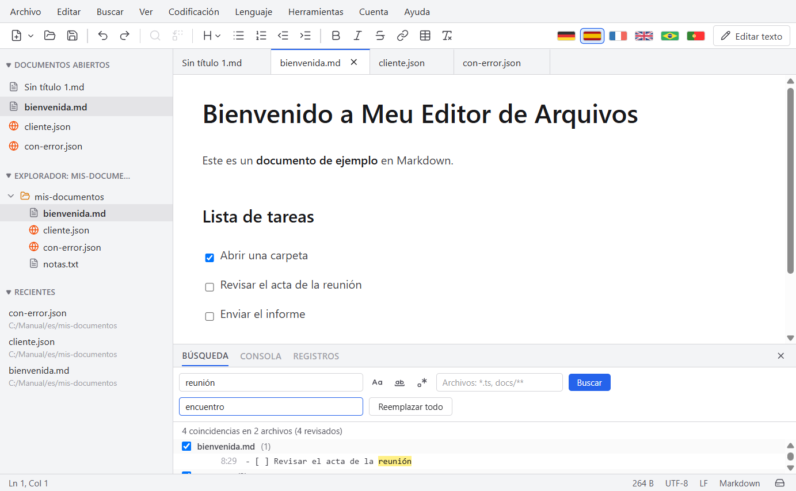
Abre una carpeta y elige Buscar → Buscar en archivos (Ctrl+Shift+F). Se abre el panel inferior.
- Escribe el texto y haz clic en Buscar (o pulsa Intro).
- Ajusta la búsqueda con los tres botones de al lado: Coincidir mayúsculas y minúsculas, Palabra completa y Expresión regular.
- Para limitar los archivos, escribe un filtro, como
*.md, docs/**. - Los resultados aparecen agrupados por archivo, con línea y columna. Haz clic en un resultado para abrir el archivo y seleccionar el fragmento.
Para sustituir el texto, escribe el nuevo en el campo de reemplazo y haz clic en Reemplazar todo. Desmarca los archivos que no deben cambiar. La aplicación pide confirmación, porque el reemplazo se escribe directamente en los archivos y no se puede deshacer desde el editor. Los archivos abiertos con cambios sin guardar se omiten, para que no pierdas trabajo.
La búsqueda no entra en carpetas como node_modules y .git, ni en archivos binarios o de más de 5 MB. Muestra como máximo 5.000 coincidencias cada vez.
9. Lenguaje, codificación y fines de línea
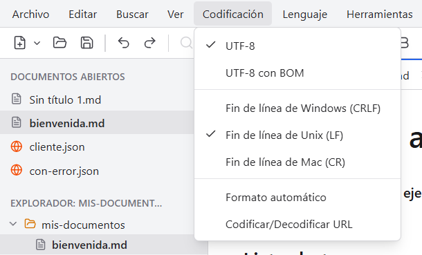
- Lenguaje: la aplicación elige el lenguaje por la extensión del archivo y usa colores para facilitar la lectura. Para cambiar el lenguaje de un documento, abre el menú y elige otro.
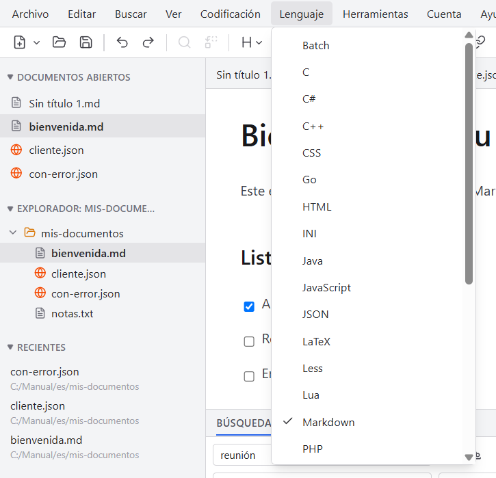
- Codificación: convierte el documento a UTF-8 o UTF-8 con BOM, y elige el fin de línea de Windows (CRLF), de Unix (LF) o de Mac (CR). La conversión marca el documento como modificado; basta con guardar para que surta efecto.
La codificación y el fin de línea actuales aparecen en la barra de estado.
10. Snippets y macros
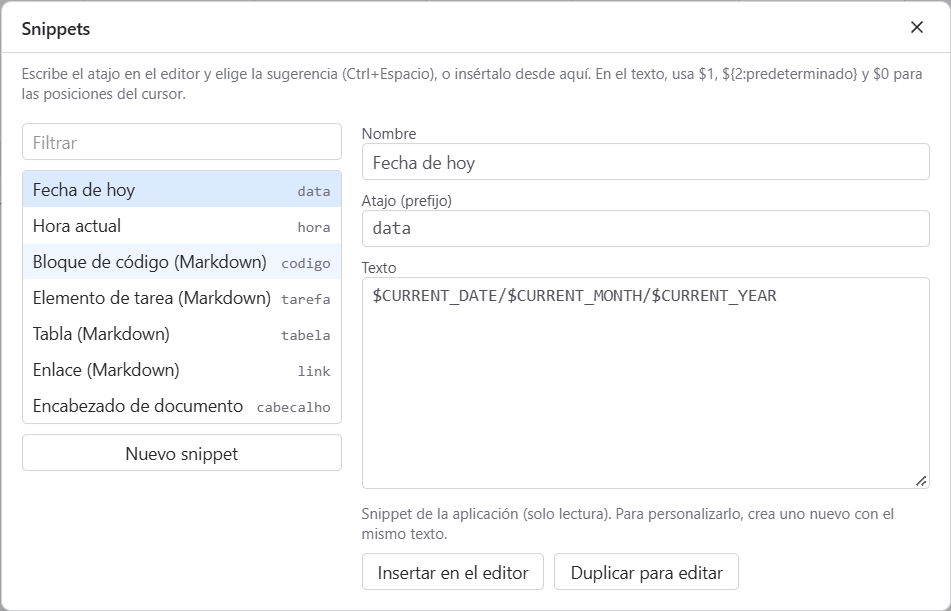
Los snippets son fragmentos de texto ya preparados. Abre Herramientas → Snippets. La aplicación ya incluye algunos: data, hora, codigo, tarefa, tabela, link y cabecalho. Para usarlos, escribe el atajo en el editor y elige la sugerencia (o pulsa Ctrl+Espacio), o haz clic en Insertar en el editor en la ventana. Para crear el tuyo, haz clic en Nuevo snippet y dale un nombre, un atajo y el texto. En el texto, $1 y ${2:predeterminado} marcan los lugares donde se detiene el cursor, y $0 es la posición final. Los snippets de la aplicación no se pueden editar, pero sí duplicar.
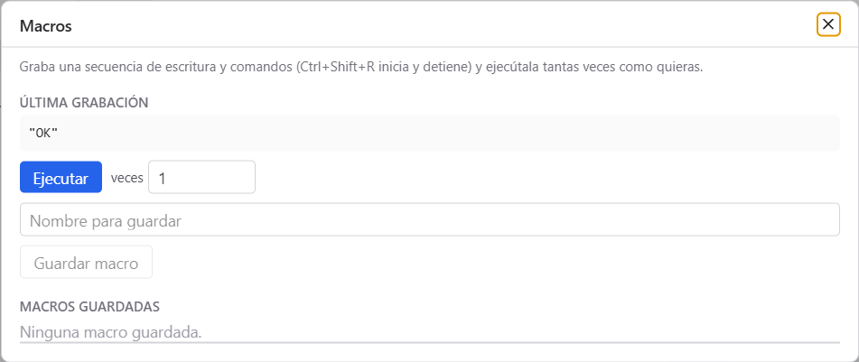
Las macros repiten una secuencia que hiciste. Pulsa Ctrl+Shift+R para empezar a grabar, escribe o edita lo que quieras y pulsa Ctrl+Shift+R otra vez para detener. Después, Ctrl+Shift+M ejecuta la última grabación. En Macros eliges cuántas veces repetirla y puedes guardar la macro con un nombre. Se graba el texto escrito, el texto pegado, las teclas de flecha, Inicio, Fin, Retroceso, Supr, Tab, Intro y los comandos de los menús. No se graban los clics del ratón ni Ctrl+Z.
11. Cuenta y archivos en la nube
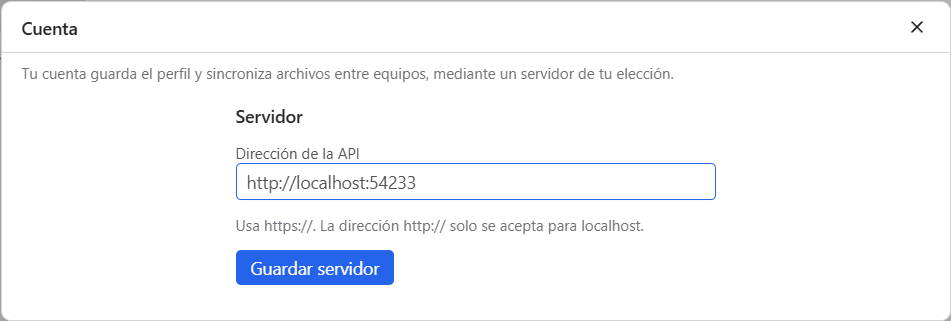
Con una cuenta guardas archivos en la nube y los abres en otros equipos. Abre el menú Cuenta.
- Dirección del servidor: la primera vez, escribe la dirección que te dio tu empresa o el administrador. Empieza por
https://. - Crear cuenta: haz clic en Crear una cuenta y rellena el correo, el nombre y una contraseña de al menos 10 caracteres.
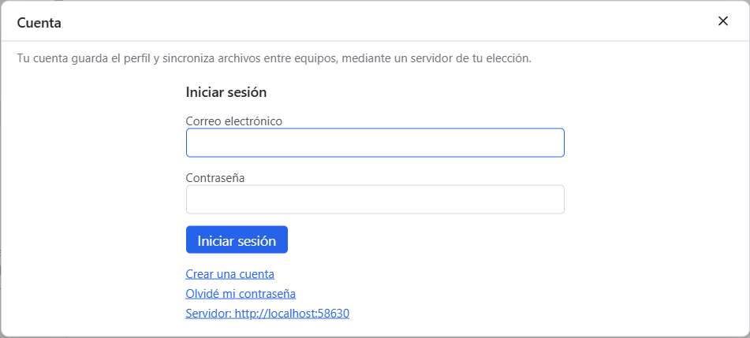
- Iniciar sesión: usa tu correo y tu contraseña. Si olvidas la contraseña, haz clic en Olvidé mi contraseña: recibirás un código por correo y podrás elegir una contraseña nueva.
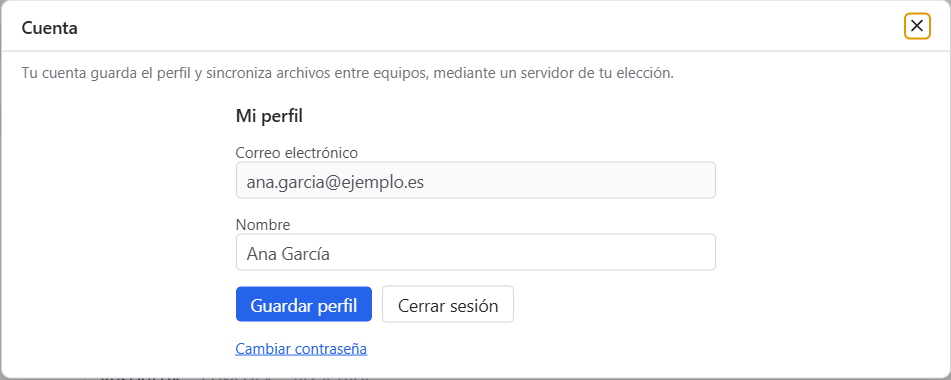
- Perfil: en Cuenta, abre tu perfil para cambiar el nombre, cambiar la contraseña o cerrar sesión. Al cambiar la contraseña, tus otros equipos tendrán que iniciar sesión de nuevo.
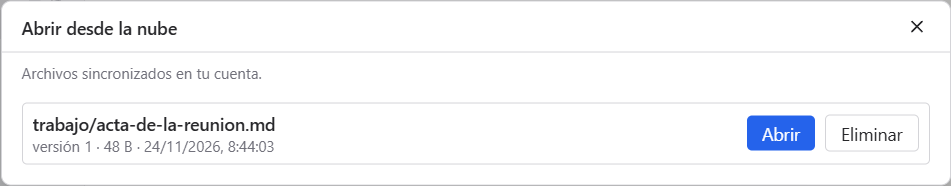
- Guardar en la nube: Archivo → Guardar en la nube. Elige la ruta, por ejemplo
trabajo/acta.md. - Abrir desde la nube: Archivo → Abrir desde la nube. En la lista puedes abrir o eliminar archivos. En un documento abierto desde la nube, Ctrl+S vuelve a guardar en la nube.
Si el archivo ha cambiado en la nube desde la última vez, la aplicación te avisa y pregunta si quieres sobrescribirlo. Cada archivo puede tener hasta 10 MB. Si tu sistema no tiene almacén de credenciales, la aplicación te avisa de que tendrás que iniciar sesión cada vez que la abras.
12. Idiomas
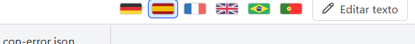
La aplicación está disponible en alemán, español, francés, inglés, portugués (Brasil) y portugués (Portugal). Se abre en el idioma de tu sistema; si no hay traducción, se abre en inglés. Para cambiar, haz clic en la bandera del idioma, a la izquierda del botón de vista previa. El cambio es inmediato y se guarda para la próxima vez. Este manual se abre en el idioma que estés usando.
13. Atajos de teclado
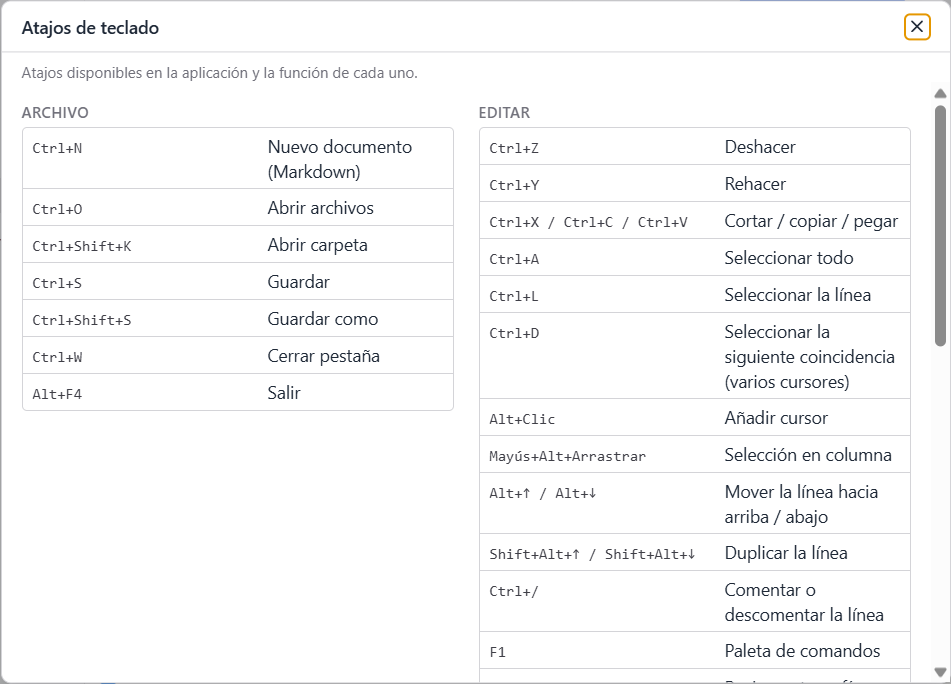
Para ver la lista dentro de la aplicación, abre Ayuda → Atajos de teclado. Los atajos disponibles:
Archivo
| Ctrl+N | Nuevo documento (Markdown) |
| Ctrl+O | Abrir archivos |
| Ctrl+Shift+K | Abrir carpeta |
| Ctrl+S | Guardar |
| Ctrl+Shift+S | Guardar como |
| Ctrl+W | Cerrar pestaña |
| Alt+F4 | Salir |
Editar
| Ctrl+Z | Deshacer |
| Ctrl+Y | Rehacer |
| Ctrl+X / Ctrl+C / Ctrl+V | Cortar / copiar / pegar |
| Ctrl+A | Seleccionar todo |
| Ctrl+L | Seleccionar la línea |
| Ctrl+D | Seleccionar la siguiente coincidencia (varios cursores) |
| Alt+Clic | Añadir cursor |
| Mayús+Alt+Arrastrar | Selección en columna |
| Alt+↑ / Alt+↓ | Mover la línea hacia arriba / abajo |
| Shift+Alt+↑ / Shift+Alt+↓ | Duplicar la línea |
| Ctrl+/ | Comentar o descomentar la línea |
| F1 | Paleta de comandos |
| F7 | Revisar ortografía |
| Ctrl+. | Sugerencias ortográficas |
Buscar
| Ctrl+F | Buscar |
| Ctrl+H | Reemplazar |
| Ctrl+Shift+F | Buscar en archivos |
| Ctrl+G | Ir a la línea |
Ver
| Ctrl+Shift+B | Mostrar u ocultar la barra lateral |
| Ctrl+Shift+E | Alternar entre vista previa y edición (Markdown y JSON) |
| F11 | Entrar o salir de pantalla completa |
| Ctrl++ | Aumentar fuente |
| Ctrl+- | Reducir fuente |
| Ctrl+0 | Tamaño de fuente predeterminado |
Markdown y JSON
| Ctrl+B | Negrita |
| Ctrl+I | Cursiva |
| Ctrl+Shift+X | Tachado |
| Shift+Alt+F | Formatear el documento (JSON) |
Macros
| Ctrl+Shift+R | Iniciar o detener la grabación de macro |
| Ctrl+Shift+M | Ejecutar última macro |
14. Preguntas frecuentes
Cerré la aplicación sin guardar. ¿He perdido mi texto? No. El texto sin guardar se conserva automáticamente y vuelve cuando abres la aplicación de nuevo.
¿Por qué el Markdown se abre con formato y no puedo escribir? Es el modo de lectura. Haz clic en Editar texto (o Ctrl+Shift+E) para editar.
Mi JSON muestra un error, pero se abre en otro programa. El visor sigue el estándar estricto de JSON: no acepta una coma sobrante al final, comentarios ni comillas simples. Usa el botón del error para ir directamente al problema.
El archivo es grande y no se abre. El límite es de 50 MB por archivo.
No puedo iniciar sesión ni guardar en la nube. Comprueba la dirección del servidor y la conexión a internet. Si el mensaje dice que la sesión ha caducado, inicia sesión de nuevo.
¿Cómo veo la versión de la aplicación? En Ayuda → Acerca de Meu Editor de Arquivos.
15. Acerca de y soporte
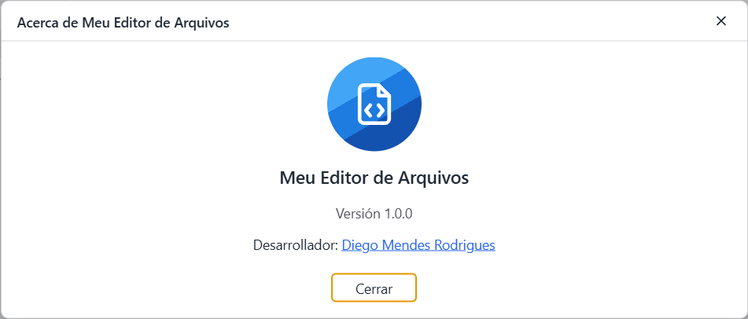
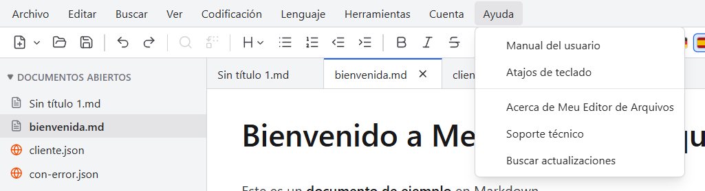
Meu Editor de Arquivos ha sido desarrollado por Diego Mendes Rodrigues. La opción Soporte técnico del menú Ayuda aún no está disponible en esta versión.